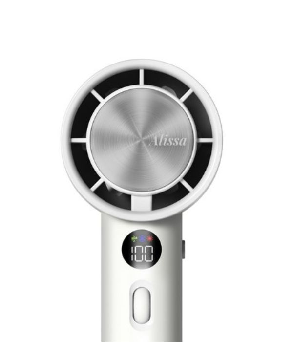
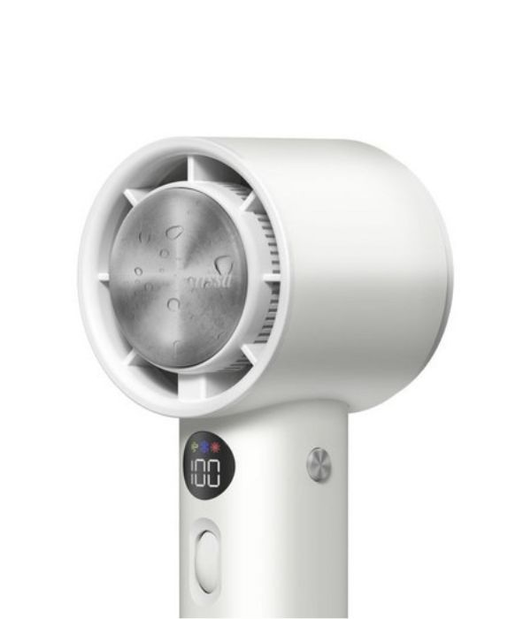
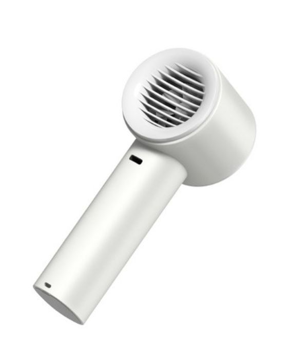

초당 15m의 압도적 폭풍과 순간 영하 냉각 패드의 결합 | 아이스 터보 MAX
알리스 100단 아이스 터보 MAX는 한여름 야외 활동의 판도를 완전히 바꾸어 놓은 고성능 무선 에어 가젯입니다. 기존의 느리고 미지근한 3단계 선풍기와 달리, 고성능 항공형 고속 BLDC 모터를 내장하여 무려 **1단부터 100단까지** 다이얼로 미세 제어되는 압도적인 제트 기류를 뿜어냅니다. 특히 헤드 중앙에 빌트인된 **반도체 열전 냉각(TEC) 아이스 패드**는 전원을 켜는 순간 얼음처럼 차가워져, 뜨겁게 달아오른 피부 표면에 다이렉트로 대고 열감을 즉각적으로 씻어낼 수 있습니다. 대용량 배터리 시스템과 직관적인 LED 디스플레이까지 탑재되어 올여름 가장 완벽한 생존 기어로 꼽힙니다.



여름철 야외 온도가 35도를 웃도는 폭염 속에서 일반적인 휴대용 선풍기는 단순히 뜨거운 외부 공기를 순환시키는 것에 그쳐 냉각 효율이 극도로 저하됩니다. 열역학적 관점에서 진정한 냉각을 구현하기 위해서는 공기의 유속을 극한으로 끌어올려 증발 잠열을 촉진하거나, 물리적인 흡열 가공 장치가 결합되어야 합니다. 대란의 중심에 선 아이스 터보 MAX 제품군은 소형 모바일 하드웨어 폼팩터 내부에 고속 제트 터빈 아키텍처와 냉각 소자를 동시 안착시킴으로써 소형 가전 시장의 기술적 변곡점을 만들어냈습니다.
본 제품의 핵심 동력원은 산업용 드론 및 프리미엄 드라이어에 응용되는 초고속 삼상 무브러시(BLDC) 모터 시스템입니다. 분당 최대 13,000~15,000회 회전하는 강력한 토크를 기반으로 헤드 내부의 유체역학적 제트 디퓨저를 통과하면서 공기를 강하게 압축 분사합니다. 전면 배널에 위치한 스크롤 무단 다이얼을 통해 유저는 풍량을 1% 단위로 세밀하게 커스텀할 수 있으며, 이 가변 제어 데이터는 내부 제어 칩셋을 거쳐 스마트 LCD 전면 패널에 즉시 동기화됩니다. 이는 불필요한 전력 소모를 방지하는 동시에 사용자에게 직관적인 제어 피드백을 전달합니다.
아이스 터보 MAX 선풍기가 제공하는 차별화된 성능의 본질은 헤드 중앙의 '아이스 패드'에 숨겨져 있습니다. 이는 전류가 흐를 때 소자의 한쪽 면은 열을 흡수하고 반대편은 열을 방출하는 '펠티어 효과(Peltier Effect)'를 활용한 첨단 열전 냉각 모듈입니다. 송풍구에서 뿜어져 나오는 고속 기류가 피부의 땀을 증발시키는 사이, 전원 가동 즉시 영하권에 가깝게 온도가 떨어지는 전면 알루미늄 코팅 패드를 경동맥이나 뺨 등의 림프관 부위에 밀착시킴으로써 체감 온도를 순식간에 하강시킵니다. 고밀도 리튬 이온 셀을 통한 안전 회로 설계까지 내장되어 다가올 역대급 폭염 속 최고의 데일리 솔루션으로 자리 잡았습니다.
실시간 한정 수량 입고 타임세일 프로모션을 통해 역대급 최저가 및 무료 배송 혜택을 즉시 확인해 보세요.
실시간 시즌 한정 특가 확인하기